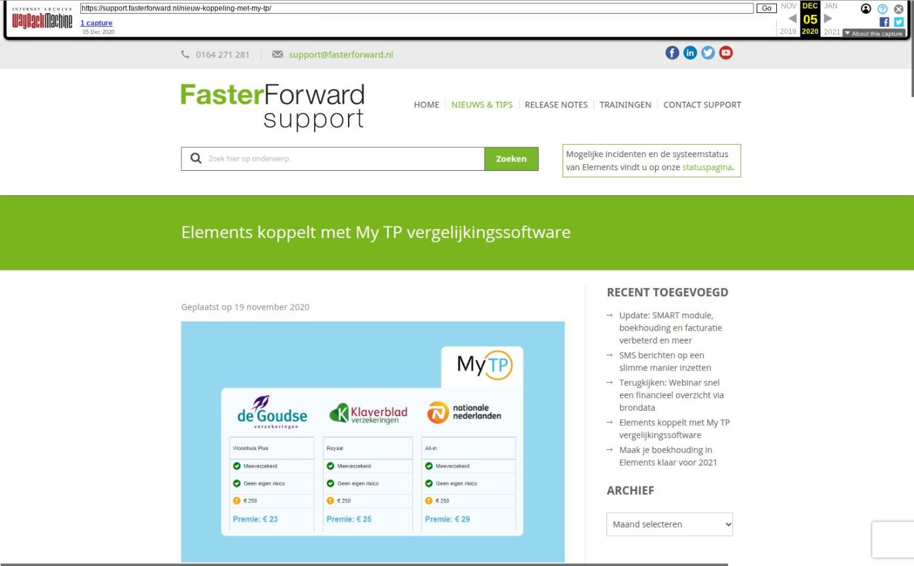

Elements koppelt met My TP vergelijkingssoftware

Tekstinhoud
Geplaatst op 19 november 2020
Faster Forward Elements is vanaf heden gekoppeld met vergelijkingssoftware My TP. Deze softwaretool in de cloud werd dit jaar uitgeroepen tot het beste vergelijkingsplatform volgens bureau DFO.
Wat is My TP?
Met My TP hoeft de adviseur niet meer in te loggen in allerlei extranetten van maatschappijen om verzekeringen handmatig vergelijken. In My TP vergelijkt de adviseur eenvoudig meerdere schadeverzekeringen voor woonpakketten en motorvoertuigen. Dit bespaart veel tijd en moeite.
De verzekeringsinformatie kan vanuit My TP in één klik doorgestuurd worden naar bijvoorbeeld het extranet van ASR. Vanuit hier wordt de verzekering aangevraagd en komt via Aplaza weer terug in Elements.
Marco Kok, eigenaar van Kok Advies over My TP:
“Met My TP bespaarden we al erg veel tijd in het offerte- en aanvraagtraject voor particuliere relaties. Nu er ook een koppeling tot stand is gebracht tussen Faster Forward en My TP hebben we altijd met één druk op de knop een volledige vergelijking klaar staan voor bestaande klanten. Op deze manier houden we nog meer tijd over voor de klant zelf.“
Hoe werkt de koppeling?
In My TP zoekt de adviseur op een klant die hij/zij in Elements heeft staan. Vervolgens worden er vele gegevens uit Elements opgehaald en ingeladen.
Alle velden die uit Elements zijn opgehaald, krijgen een groen ‘download’ icoon. Dit zie je terug op onderstaande afbeelding.
De adviseur volgt een eenvoudig 9 stappenplannen, waarbij hij vrijwel alleen de gegevens hoeft te controleren. Er hoeft handmatig bijna niets ingevuld te worden
In de onderstaande afbeelding is een printscreen te zien, waarin een aantal producten zijn geselecteerd om te vergelijken.
Naast dat de vergelijking zoveel mogelijk vooraf wordt ingevuld, wordt de huidige situatie van de consument in kaart gebracht.
Met deze gegevens wordt de eerste kolom in het vergelijkingsoverzicht gevuld. Deze persoonlijke gegevens zie je in het onderstaande screenshot bij Woonhuis, Inboedel, Auto en Motor.
Met de gegevens uit de huidige situatie van de klant en de gegevens die zijn ingevuld voor het maken van de vergelijking wordt het vergelijkingsoverzicht tot stand gebracht.
De aanvraag die je hebt ingevuld op het extranet van de verzekeraar, komt vanzelf binnen in de Aplaza inbox op je Elements dashboard.
Demonstratie of inrichting
1. My TP: Ben je benieuwd naar de mogelijkheden van My TP? Neem dan contact op via 085-1302446 of mail naar Info@my-tp.net.
2. Faster Forward: Zodra je een overeenkomst hebt met My TP en er dus actief gebruik van maakt, kunnen wij de koppeling voor je inrichten. Stuur hiervoor een e-mail naar support@fasterforward.nl
Categorie: Algemeen